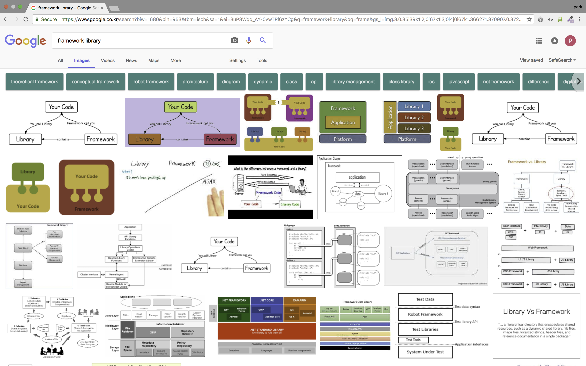
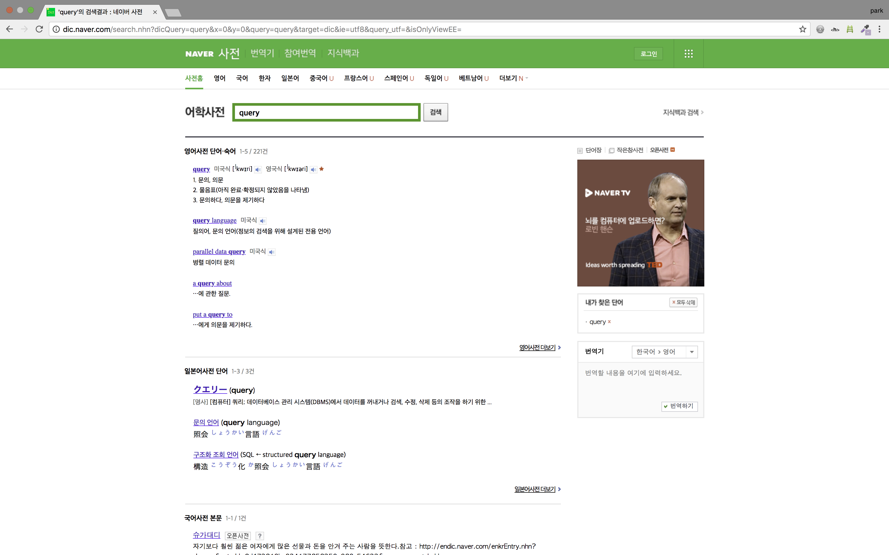

개발용어 공부하는 법
13 May 2018저와 같이 이제 막 개발공부를 시작했다면, 어려운 점 중 하나가 개발용어를 이해하는 부분 일 것 입니다. node.js, npm, routing, Framework, library 등등…
저도 아직 현업에서 개발자로 일해 본 경험이 없기때문에 와 닿지 않은 개념이 많이 있습니다. 하지만 최소한 감이라도 잡을 수 있게 현업개발자에게 배운 개발용어 공부하는 법을 공유하려고 합니다.
- 영문으로 검색하기
- 웬만한 최신 자료는 모두 영어로 되어 있기때문에, 앞으로 개발자로 살아가기 위해서는 영어와 친해지셔야 합니다.
-
Google Imgae 검색
- 제가 모르는 개발용어가 나왔을 때 가장 먼저하는 것이
구글이미지 검색입니다. 왜냐하면 문자로 보는 것보다 이미지로 보는 것이 직관적이기 때문입니다.
-
예를 들어, Framework와 library의 차이점이 궁금하다면
Framework vs library,framework library와 같이 검색을 하면 아래와 같은 여러 이미지가 나옵니다.검색 결과 중에 공통된 이미지거나 직관적으로 느껴지는 이미지를 봅니다.
code를 call하는 주체에 따라 Framwork와 library로 구분된다고 하네요.

- 제가 모르는 개발용어가 나왔을 때 가장 먼저하는 것이
-
개발용어 번역하기
-
영문으로 된 개발용어를 한글로 변역하면 용어가 내포하는 의미를 알 수 있다.
-
예를 들어, query에 대해 들어봤다고 가정을 해보자. 보통 query를 날린다는 말을 많이 사용한다.
네이버 사전에 따르면, query는
1) 문의, 의문 2)물음표(아직 완료・확정되지 않았음을 나타냄) 3) 문의하다, 의문을 제기하다와 같은 내용을 뜻한다고 합니다.정확히는 모르겠지만 query는 무언가 궁금한 것 혹은 의문이 있는 것을 요청한다고 볼 수 있겠네요.

-
-
Google 검색
- 1번과 2번을 통해 개발 용어에 대한 (아주 작은)감을 잡으셨다면, 그 다음에 구글링 하면서 웹문서를 읽으신다면 개념을 정리하는데 조금은 편하실 겁니다.
-
Youtube 검색
- 글과 이미지로 느낌이 안온다면 Youtube에 영상도 찾아보는 것을 추천합니다. Google 검색과 같이 영문으로 해주실 것을 추천드립니다.